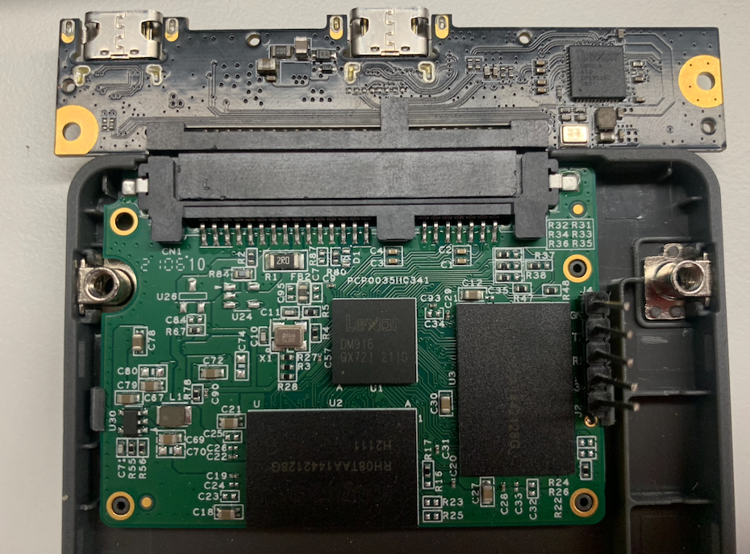
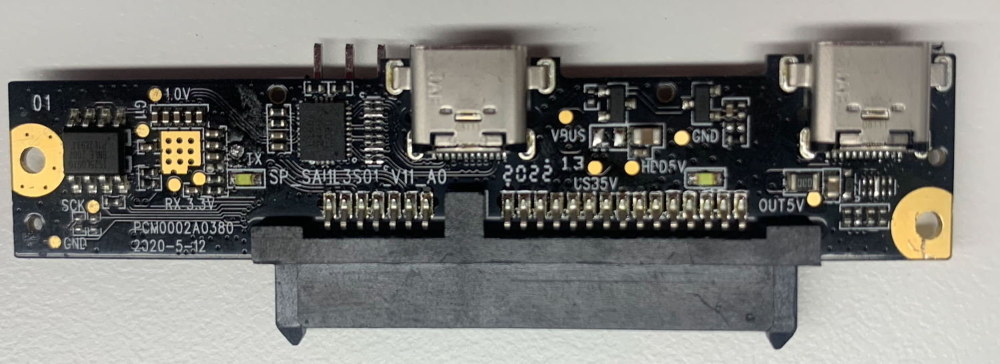
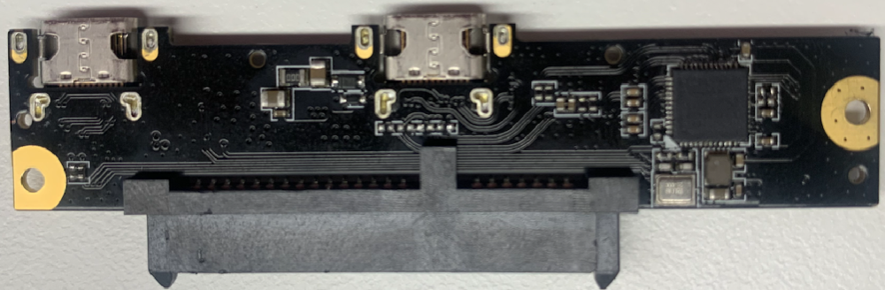
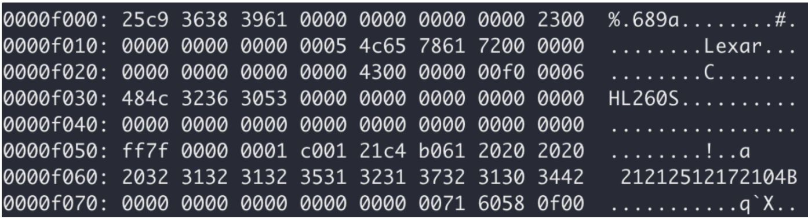
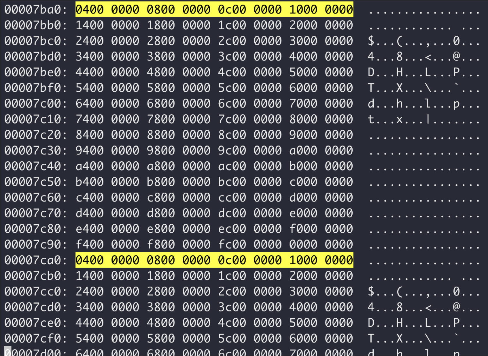
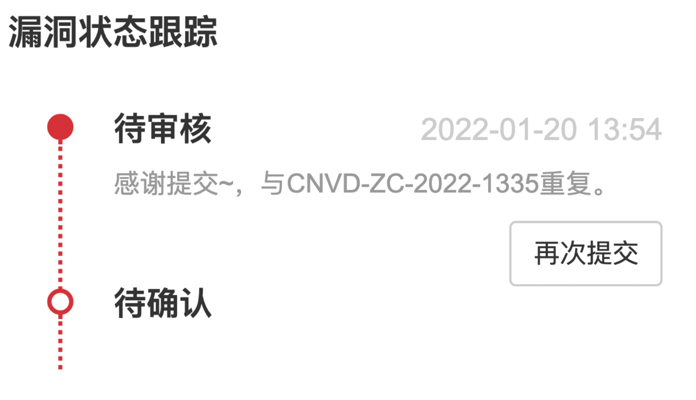

0x00 前研
参加了 “雷克沙杯”HL260s移动硬盘破解挑战赛，记录一下整个过程。
0x01 SSD 组成部分
包含存储芯片部分和USB-to-SATA 转接器两个部分。
存储芯片部分包含4片 longsys 128GB 存储，一共512GB
桥接器芯片正面，包含一个 SOP8的SPI-flash， 另一个芯片不清楚。

反面包含一颗 SATA-to-USB 桥接器芯片。
0x02 flash 固件 分析
提取后包含部分 USB descriptor 明文信息和加密固件
USB descriptor:
可以得出bridge controller 为 Initio INIC-3638
 结合芯片信息 符合lexar 相关介绍，但是没有对应datasheet

剩下部分为加密固件

0x03 读取分区
使用lexar 原装的 usb-to-sata bridge，可以发现只能识别256GB的块区
usb 2-4.3: New USB device found, idVendor=21c4, idProduct=b061, bcdDevice= 3.06
usb 2-4.3: New USB device strings: Mfr=1, Product=2, SerialNumber=3
usb 2-4.3: Product: HL260S
usb 2-4.3: Manufacturer: Lexar
usb 2-4.3: SerialNumber: 21212512172104B
usb-storage 2-4.3:1.0: USB Mass Storage device detected
scsi host5: usb-storage 2-4.3:1.0
scsi 5:0:0:0: Direct-Access Lexar HL260S 0306 PQ: 0
ANSI: 6
使用第三方usb-to-sata bridge, 可以识别512GB
usb 2-3: New USB device found, idVendor=152d, idProduct=2590, bcdDevice=81.05
usb 2-3: New USB device strings: Mfr=1, Product=2, SerialNumber=3
usb 2-3: Product: Seatay Generic USB Device
usb 2-3: Manufacturer: Seatay USB to ATA/ATAPI Brid
usb 2-3: SerialNumber: 00A123459ADF
scsi host5: uas
scsi 5:0:0:0: Direct-Access Seatay SBOX02503 8105 PQ: 0 ANSI: 6
sd 5:0:0:0: Attached scsi generic sg4 type 0
sd 5:0:0:0: [sdd] Spinning up disk...
......ready
sd 5:0:0:0: [sdd] 1000215216 512-byte logical blocks: (512 GB/477 GiB)
sd 5:0:0:0: [sdd] 4096-byte physical blocks
可以看到加密分区被识别为Unpartitioned space
fdisk
Disk /dev/sdd: 476.94 GiB, 512110190592 bytes, 1000215216 sectors
Disk model: SBOX02503
Units: sectors of 1 * 512 = 512 bytes
Sector size (logical/physical): 512 bytes / 4096 bytes
I/O size (minimum/optimal): 4096 bytes / 4096 bytes
Disklabel type: dos
Disk identifier: 0x2e6de77c
Device Boot Start End Sectors Size Id Type
/dev/sdd1 2048 500107607 500105560 238.5G 7 HPFS/NTFS/exFAT
Command (m for help): F
Unpartitioned space /dev/sdd: 238.47 GiB, 256054222848 bytes, 500105904 sectors
Units: sectors of 1 * 512 = 512 bytes
Sector size (logical/physical): 512 bytes / 4096 bytes
Start End Sectors Size
500109312 1000215215 500105904 238.5G
此时已经可以通过dd读取加密分区加密后的数据，但是没什么用，尝试直接dd写入但是数据没变。
0x04 filedog 接口测试
使用逻辑分析仪采样了插入普通U盘和不插时的数据对比，有点区别但是没有进一步分析

有一定规律
0x05漏洞 ： 对加密分区部分可进行数据写入
使用第三方USB-to-SATA bridge可以通过fdisk和mkfs 格式化整个设备


原加密分区数据全都被覆盖了

但是由于提交时间晚了，痛失3k。
之前没格式化时dd写入数据失败，一旦格式化之后，好像数据都没了，这也是没有一开始格式化的原因。
0x06 总结
对于SSD漏洞挖掘完全是从0开始的，有些芯片都不认识。
而且可以提前购买lexar的另外一款加密一点硬盘进行测试，这次的测试没有给filedog，因此也不清楚里面key的结构，不清楚用处大不大。
直接尝试格式化进行加密分区写入，说不定漏洞就拿到手了,但是可能就无法测试其他漏洞了。